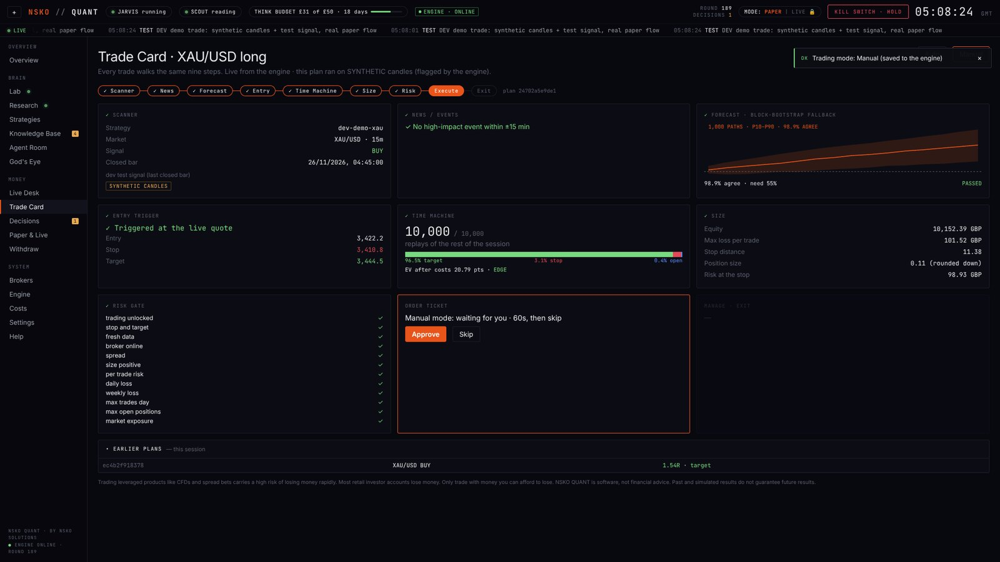
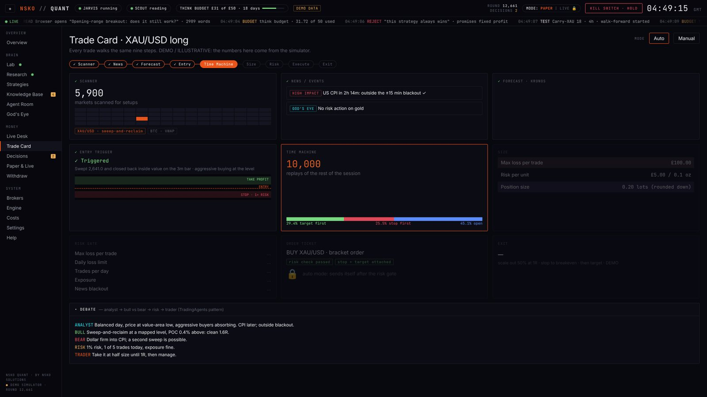

FOR TRADERS · THE METHOD
How NSKO QUANT
Works
Trade the markets. Automatically.

NSKO QUANT · BY NSKO SOLUTIONSNSKOSOLUTIONS.CO.UK
This document explains the method: where ideas come from, how they are tested, how a single trade is made, and where the limits are. It is written from the engine's code. Where a feature is optional, untested or a placeholder, it says so.
Trading leveraged products like CFDs and spread bets carries a high risk of losing money rapidly. Most retail investor accounts lose money. Only trade with money you can afford to lose. NSKO QUANT is software, not financial advice. Past and simulated results do not guarantee future results.
Settings and thresholds (1%, 1.40, 10,000 …) are the engine's real defaults. Every price, probability, profit or win rate shown in an example or a screenshot is marked ILLUSTRATIVE or DEMO. None of them is a result.
Most "trading bots" are a black box on someone else's server. NSKO QUANT is the opposite.
The engine runs on your own machine and trades in your own broker account through a trade-only key. NSKO never holds client money. There is no withdrawal code in the engine; a scan for withdrawal API calls is part of the test suite.
Every desk starts on paper. Live unlocks only after 21 days and 30 paper trades, a real broker key that can trade but not withdraw, and the typed phrase. The first 2 weeks of live run at 50% size.
Twelve checks on every order. In live the gate cannot be switched off, and settings are clamped to hard caps whatever you type.
A strict pass mark after costs on out-of-sample data, plus overfitting checks. Failures are kept and shown. Results on synthetic data can never become a strategy.
Signals use closed bars only. The forming bar is dropped. Higher-timeframe levels are usable only once their bar has closed. Every signal generator and pattern detector is tested for look-ahead.
Every position gets a broker-side stop. If a stop cannot be placed and verified after 3 idempotent retries, the position is closed. After a reboot the engine reconciles with the broker and re-places missing legs.
JARVIS runs a small team of software agents. Each has one job. Every step emits an event you can watch in the ticker, the Research screen and the Agent Room.
Research has a daily budget (research.daily_budget, default 50 think units). About 1 unit per 1,000 local-model tokens; offline steps cost 0.05. When the budget runs out the round pauses and logs PAUSE. In free / Ollama mode the budget is compute on your own computer, not money.
No Ollama: the deterministic summariser. Nothing new online: a small built-in set of notes, flagged synthetic.
Each recipe becomes 10 seeded parameter variants. Each variant is back-tested with costs, split in time, and checked for overfitting. Only real (non-synthetic) data can create a strategy.
lab.risk_pct. One position at a time.| Check | Threshold | Why |
|---|---|---|
| OOS Sharpe after costs | ≥ 1.40 | The headline pass mark, on unseen data. |
| OOS trades | ≥ 30 | Too few trades say nothing. |
| Max drawdown | ≤ 20% | A strategy you cannot sit through is useless. |
| Stability (±20% params) | ≥ 0.5 × base, > 0 | Nudge every parameter 20%: the worst case must keep at least half the result. |
| PBO (CSCV, 16 blocks) | ≤ 0.5 | Probability of backtest overfitting across the 10 variants. |
| Sharpe decline IS → OOS | ≤ 0.6 | A big drop from fitted to unseen data signals curve-fitting. |
| Beats random entries | ≥ 90% | Same exits, random entries: the strategy must beat 90% of them. |
All thresholds live in the lab.bar.* settings. Robustness checks run only on variants that already pass the primary bar, to save compute. Outcomes are clear, sieve or failed, with a "why" shown in the Lab's "Why do they fail?" panel.
The passing variant's trades are reshuffled and bootstrapped to show a spread of outcomes: drawdown odds and a p5 / p50 / p95 fan. It answers "how bad could the order of wins and losses have been?", not "what will happen next".

Clearing the bar means a strategy survived a strict test on history, after estimated costs. It does not mean it will make money. Markets change, costs differ by broker, and the paper broker's costs are approximations.
For each approved strategy the engine runs this flow on the latest closed bar. Every step publishes an event and can stop the trade.
| # | Step | What the code does | Stops the trade if… |
|---|---|---|---|
| 1 | Scanner | Approved strategies only. Drops the forming bar; needs ≥ 50 closed bars. Takes a signal stamped on the last closed bar. | no signal; live but not unlocked |
| 2 | News / events | High-impact events for the market's currencies, from settings, an optional calendar file and the shipped calendar (FOMC, NFP, jobless claims, EIA). | an event within ±15 min |
| 3 | Forecast | 1,000 paths over 16 bars. Kronos if installed, else a block-bootstrap of the market's own recent bars. | fewer than 55% of paths agree |
| 4 | Entry trigger | Enters at the live quote (ask for buys, bid for sells), never at bar t's prices. | price already beyond stop or target |
| 5 | Time Machine | 10,000 replays of the rest of the session. Expected value after costs must be positive. | EV ≤ 0 after costs |
| 6 | Size | Max £ loss (1% × equity × live size factor) ÷ (stop distance × value per point), rounded down to the broker's step. | size below broker minimum |
| 7 | Risk gate + debate | 12 hard checks (section 8). Then analyst → bull / bear → risk → trader, via local Ollama or rules. The debate can only veto. | any check fails; debate vetoes |
| 8 | Execute | Native bracket, or a verified fallback (entry, then stop, then target). Idempotent client IDs. Manual mode waits 60 s for Approve (default: skip). | stop cannot be placed → close |
| 9 | Manage | At +1R close 50% and move the stop to breakeven. Optional ATR trail after that. Intraday strategies flatten at session end. | – |
| 10 | Exit, journal + alert | Exit by stop, target or session end. P&L and R written to the journal and the hash-chained audit log; ntfy + Telegram alert. | – |

Made-up prices and probabilities, worked through with the engine's real rules and the paper broker's cost and size settings for gold. Not a real trade and not a forecast.
| # | Step | What happens (ILLUSTRATIVE) |
|---|---|---|
| 1 | Scanner | Strategy NSKO-OF-1 XAU (on paper). A 3-minute bar closes after sweeping below the prior session's value-area low at 2,641.0 and closing back inside: BUY signal. Stop 2,639.8 (just below the swept low). Target 2,652.8. |
| 2 | News | US CPI is 2 h 14 min away: outside the ±15 min blackout. Pass. |
| 3 | Forecast | 1,000 paths; 61% end above entry. Need 55%. Pass. |
| 4 | Entry | Live ask 2,644.8. Between stop and target. Pass. Risk = 5.0 points; reward = 8.0 points (1.6R). |
| 5 | Time Machine | 10,000 replays: target first 41%, stop first 33%, still open 26%. Costs = spread 0.30 + 2 × slippage 0.05 = 0.40 pts. EV = 0.41 × (8.0 − 0.4) − 0.33 × (5.0 + 0.4) = 3.12 − 1.78 = +1.33 pts > 0. Pass. |
| 6 | Size | Paper equity £10,000 × 1% = £100. Value per point for 1.0 lot of gold = 100 oz × £0.79 = £79. Stop costs 5.0 × £79 = £395 per lot. £100 ÷ £395 = 0.253 → rounded down to 0.25 lots. Loss at stop ≈ £98.75. |
| 7 | Risk gate | £98.75 ≤ £100 · 1 of 5 trades today · 0 of 2 open · spread within cap · fresh data · broker online. Debate: 4 points for, 1 against → take. |
| 8 | Execute | Auto mode: bracket order BUY 0.25 XAU/USD, stop 2,639.8, target 2,652.8, sent and verified. |
| 9 | Manage | Price reaches 2,649.8 (+1R). Close 0.12 lots (half, rounded down to the 0.01 step) = +£47.40. Stop moved to 2,644.8 (breakeven). |
| 10 | Exit | Target hit with 0.13 lots: +8.0 × 0.13 × £79 = +£82.16. Total ≈ +£129.56 ≈ +1.31R before costs. Journal written; alert sent. |
Had the stop been hit before +1R, the loss would have been about £98.75 plus costs (≈ −1R). After the scale-out, the worst case for the rest is breakeven, except for gaps and slippage. Losing trades are normal; the gate keeps each one small.
NSKO-OF-1 does not guess where price is going. It maps where other traders have been active, waits for price to reach one of those places, and only acts when the market shows its hand there.
Balanced when price is inside the prior value area; imbalanced when it has been accepted outside it for 3 bars.
| Rule | NSKO-OF-1 |
|---|---|
| Location | Acts only at a mapped level. Nothing in the middle of nowhere. |
| Confirmation | A sweep and reclaim of the level (price trades through it, then closes back), or aggressive volume: a volume spike with the close in the trade's direction. |
| Stop | Just beyond the swept extreme. |
| Target | The next profile level, or the POC when the market is balanced. An R-multiple fallback and a minimum reward:risk apply. |
| Timeframes | Gold: 15-minute levels + 3-minute trigger. Bitcoin: 1-hour + 5-minute. |
| Sessions | Gold: London and New York only. Crypto: 24/7 with a liquidity filter. |
| News | Optional blackout filter (on top of the engine's ±15 min blackout). |
Gold CFDs report no exchange volume, only how many times the price changed (tick volume). So for gold the profile is a tick-volume profile: it shows activity, not traded size, and it is labelled that way everywhere. Order-flow bubbles (big aggressive orders) are drawn only for crypto, from Kraken's public trade stream, which gives true trade-by-trade volume with the taker side. Same-timestamp, same-side trades are merged into one aggressive order.
The forecast asks "which way is price more likely to drift?". The Time Machine asks "with this stop and target, is the bet worth taking after costs?".
Kronos is an open-source foundation model for candlestick data (MIT licence). If it is installed, the engine feeds it the last 400 closed bars and samples future paths (model "Kronos-small", tokenizer "Kronos-Tokenizer-base"). It is optional and not installed by default.
Without Kronos, the engine uses the block-bootstrap fallback: it builds paths by stitching together blocks of 8 real bar-moves from the market's own last 500 bars. Every result names which engine was used.
1,000 paths, 16 bars ahead. At least 55% must end on the trade's side of the entry.
10,000 block-bootstrap replays (blocks of 8 bars) of the rest of the session, starting at the entry price. For each replay it records whether the target or the stop is touched first, or neither by session end.
Rule: P(target) × (reward − costs) − P(stop) × (risk + costs) > 0. Costs = spread + slippage both ways + commission, in points.

God's Eye watches the physical world for events that can move markets. It can raise an alert and suggest cutting risk. It can never open a trade.

| Flights | adsb.lol (military feed) |
| Ships | AISStream · own key · off by default |
| Satellites | CelesTrak |
| Quakes | USGS |
| Fires | NASA FIRMS · own key · off by default |
| Weather | Open-Meteo (option: NOAA GFS) |
| Launches | Launch Library 2 |
Each alert: event → assets → a JARVIS note → an optional risk action (cut size / pause new) → opens_trade: false. Deduplicated per day. Synthetic layers never raise one.
Risk actions are suggestions unless you set godseye.risk_actions = "apply". Applied actions are recorded as risk flags, which can only reduce risk. In this release the risk gate does not yet read those flags automatically; treat them as information and act on them yourself.
Crop Watch compares Sentinel-2 vegetation cover (cloud-adjusted, a stand-in for NDVI) over the last 30 days with the same window a year ago, for Minas Gerais coffee, Côte d'Ivoire and Ghana cocoa, Kansas and Ukraine wheat and Iowa corn, plus Open-Meteo frost and heat warnings. Oil Storage uses the EIA weekly crude stocks series (your own free key). Car Counts is a locked placeholder.
| Rule | Default | Live hard cap |
|---|---|---|
| Trading unlocked (kill switch off, no daily stop) | – | – |
| Has a stop and a target | required | required |
| Fresh data | ≤ 120 s old | – |
| Broker online | required | required |
| Spread | ≤ 15 bps (or per market) | – |
| Size above zero | required | required |
| Per-trade risk (loss at stop) | 1% of equity | 2% |
| Daily loss (then stop for the day) | 3% | 5% |
| Weekly loss (from Monday, UTC) | 6% | 10% |
| Trades per day | 5 | 10 |
| Open positions | 2 | 4 |
| Open risk on one market | 2% of equity | 4% |
Every check is written to risk_events with its reason. In paper you may switch the gate off for experiments (each check is then labelled "gate switched off (paper only)"). In live it is always on.
Cancels all orders, closes all positions and locks trading. From the app (hold 1.5 s), the tray (native confirm, works with the window closed), POST /kill (no login needed, by design) or Telegram /kill from the paired chat only. Alert sent as ntfy urgent.
An append-only, hash-chained audit log. The database refuses updates and deletes on it, and verify_chain() detects tampering. Logs redact keys and tokens.
Live never changes mid-trade: promotions and rollbacks are queued until the strategy is flat. Auto-updates go to paper only, and only if a variant beats live OOS Sharpe by 0.2.
The engine has no withdrawal code. Coinbase keys that can transfer are refused. Kraken permissions cannot be detected, so the user is told to leave "Withdraw Funds" unticked.
True volume (crypto on Kraken): the size of each trade and who was the aggressor. Tick volume (gold CFDs): how often the price changed. Tick volume tracks activity reasonably but says nothing about size or aggressor, so gold gets a tick-volume profile and no bubbles.
When no real data is available (for example gold before a broker or CSV is connected), the engine generates practice candles: GARCH(1,1) volatility with fat-tailed shocks, a London / New York activity curve, trend regimes and gold's weekend close. They are seeded and stable, always flagged, and Lab results on them never become strategies. All seed recipes fail the bar on synthetic data, as they should.
| Feed | Used for | Notes |
|---|---|---|
| YouTube Data API | Research | Your key; transcripts off by default. |
| AISStream | Ships layer | Your key; off by default; commercial terms not confirmed. |
| NASA FIRMS | Fires layer | Your MAP_KEY; off by default. |
| EIA API | Oil storage | Your key. |
| SEC EDGAR | Filings (context) | No key, but needs a User-Agent with your name and email (sec.user_agent); off until set. |
Keys go in your keychain (or an NSQ_<NAME> environment variable), never in settings.
Open-Meteo weather data is CC BY 4.0, but its free API is for non-commercial use only. A paid product must use Open-Meteo's customer API (setting open_meteo_api_key). Planetary Computer and AISStream terms should also be re-checked for commercial use.
Thank you to the projects and data providers below. Names are given as plain text; each belongs to its owner, and none endorses NSKO QUANT. Data-source terms follow assets/LICENSES.md.
NSKO QUANT · by NSKO Solutions · nskosolutions.co.uk. This document describes the software as built at the time of writing.